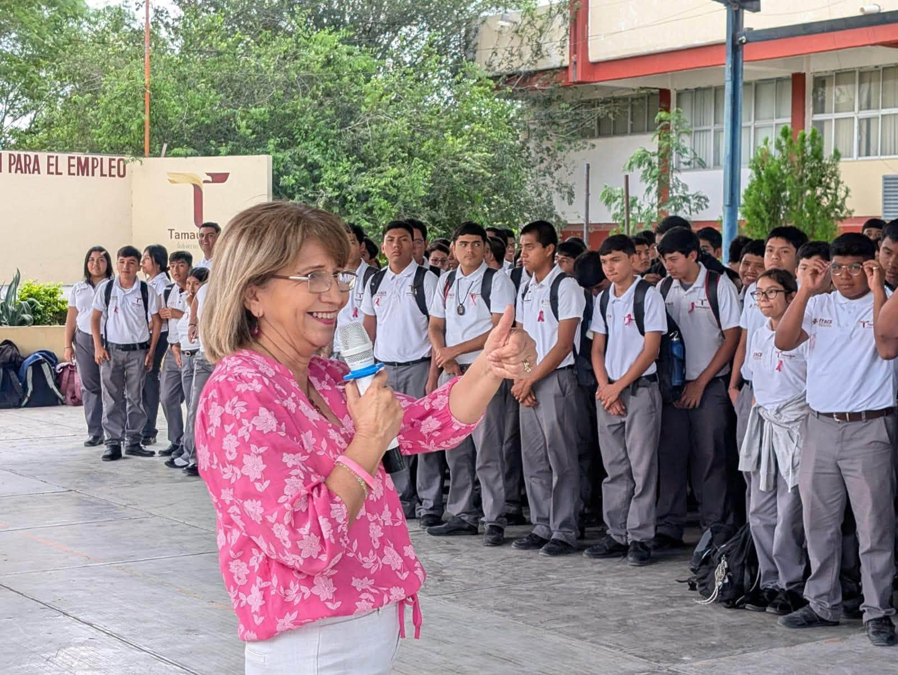
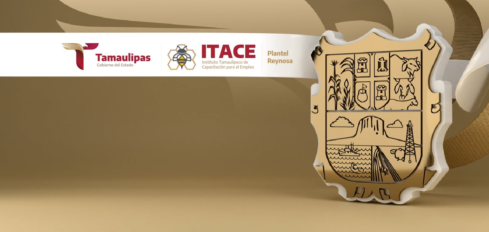

Información institucional
El portal oficial del ITACE se utiliza como referencia para consultar información general, servicios, convocatorias y datos de sus planteles.
Portal oficial del ITACE
Plantel Reynosa
Instituto Tamaulipeco de Capacitación para el Empleo

Reconocimiento a las fuentes de información, recursos y herramientas utilizadas en este proyecto académico.
ITACE DIGITAL 4.0 es una propuesta académica de modernización de un portal informativo para el ITACE Plantel Reynosa. Su propósito es organizar información institucional en distintas secciones y facilitar la navegación mediante un diseño claro, accesible y adaptable a diferentes dispositivos.
El contenido se organiza en páginas dedicadas a la institución, la oferta educativa, las instalaciones, la vida estudiantil, los proyectos, las noticias, los eventos y otros temas de interés.
El portal oficial del ITACE se utiliza como referencia para consultar información general, servicios, convocatorias y datos de sus planteles.
Portal oficial del ITACE
Se consulta la información institucional del plantel como referencia para la ubicación, los medios de contacto y las especialidades publicadas.
Consultar información del plantel
Las publicaciones institucionales se utilizan como referencia para la sección de noticias y para los acontecimientos documentados en la página de Eventos.
Sala de prensa del ITACE
La información de referencia sobre preinscripción e inscripción se consulta en la página institucional correspondiente. Los requisitos y fechas pueden cambiar.
Consultar admisiones oficiales
Estructura y organización del contenido de las páginas del sitio web.

Diseño visual, distribución de elementos y adaptación a diferentes tamaños de pantalla.

Desarrollo de funciones interactivas implementadas en las secciones que lo requieren.

Control de versiones y registro de los cambios realizados durante el proyecto.
Los recursos visuales utilizados en este proyecto incluyen fotografías, logotipos e imágenes de referencia relacionados con la institución, sus actividades y las tecnologías web.
Los materiales externos conservan el reconocimiento de sus respectivos autores y fuentes. Su utilización debe respetar las condiciones de licencia, uso y atribución correspondientes.
Las fotografías propias del proyecto se identifican como material elaborado o recopilado para esta propuesta académica.
Proyecto: ITACE DIGITAL 4.0
Institución de referencia: ITACE Plantel Reynosa
Asignatura: Desarrollo Web
Grupo: 502-B
Autoría: Proyecto realizado y revisado individualmente por Kenya Ghisell, grupo 502-B.
Tecnologías: HTML5, CSS3 y JavaScript.
Control de versiones: Git y GitHub.
Este sitio es una propuesta académica no oficial y no representa un portal institucional autorizado. Los logotipos, fotografías y otros recursos pertenecen a sus respectivos titulares. La información institucional debe verificarse en las fuentes oficiales del ITACE, ya que puede actualizarse o modificarse.